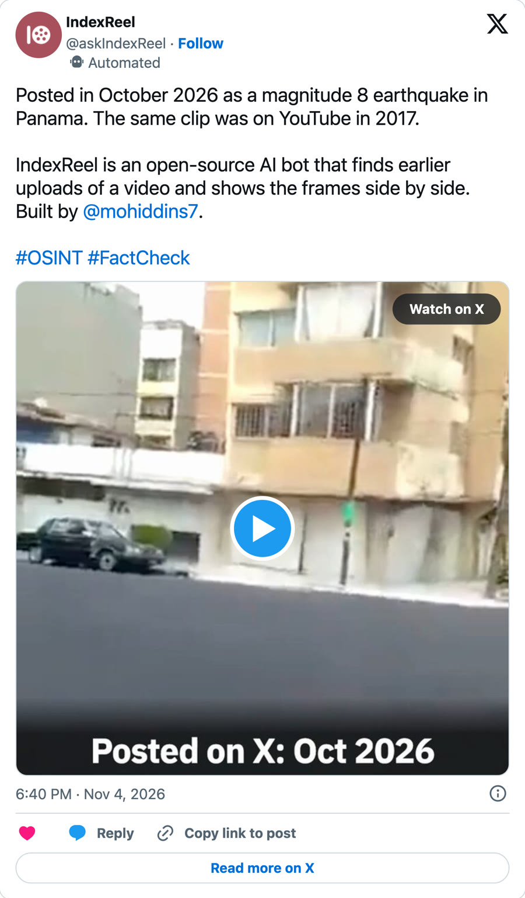

Video
The 3-minute demo, and the post @askIndexReel made on X about the Panama clip.
Is this video really new?Demo, 2:57
Under every viral video, someone asks if it's really new. IndexReel looks for earlier uploads of the same footage and shows the frames side by side, so you can make the call yourself.
On X it runs as @askIndexReel. A post captioned as an October 2026 earthquake in Panama had 4 videos. The bot checked them in order and found that the third one was online on YouTube in 2017.
The video plays from YouTube (youtube-nocookie.com) once you press play. NASA footage courtesy of NASA. Volcano footage courtesy of the US Geological Survey.
- 0:00Is this video really new?
- 0:07The problem
- 0:27NASA footage, re-edited
- 0:52On X: a real post from Panama
- 1:09How it knows
- 1:21Seven posts, four recordings
- 2:03Claims with no video left
- 2:11Benchmarks
- 2:40Close
On X
The post @askIndexReel made on Nov 4, 2026. Its 42-second video plays on X.

Posted in October 2026 as a magnitude 8 earthquake in Panama. The same clip was on YouTube in 2017.
IndexReel is an open-source AI bot that finds earlier uploads of a video and shows the frames side by side. Built by @mohiddins7.
#OSINT #FactCheck
The post's text, as posted.
Seen a video that looks new?
Tag @askIndexReel
under the post.
Built by Mohiddin for the Meta Global AI Developer Hackathon 2026, Indie track. Code under Apache 2.0. NASA footage courtesy of NASA. Volcano footage courtesy of the US Geological Survey.